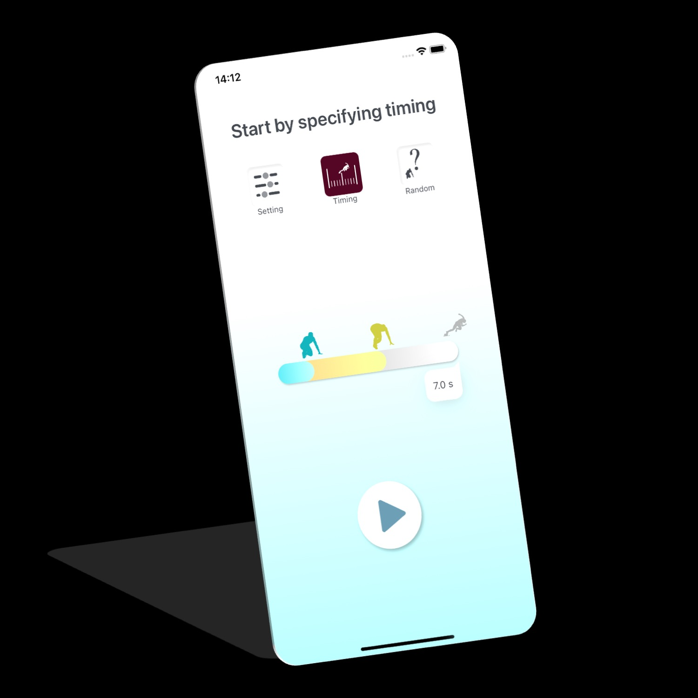
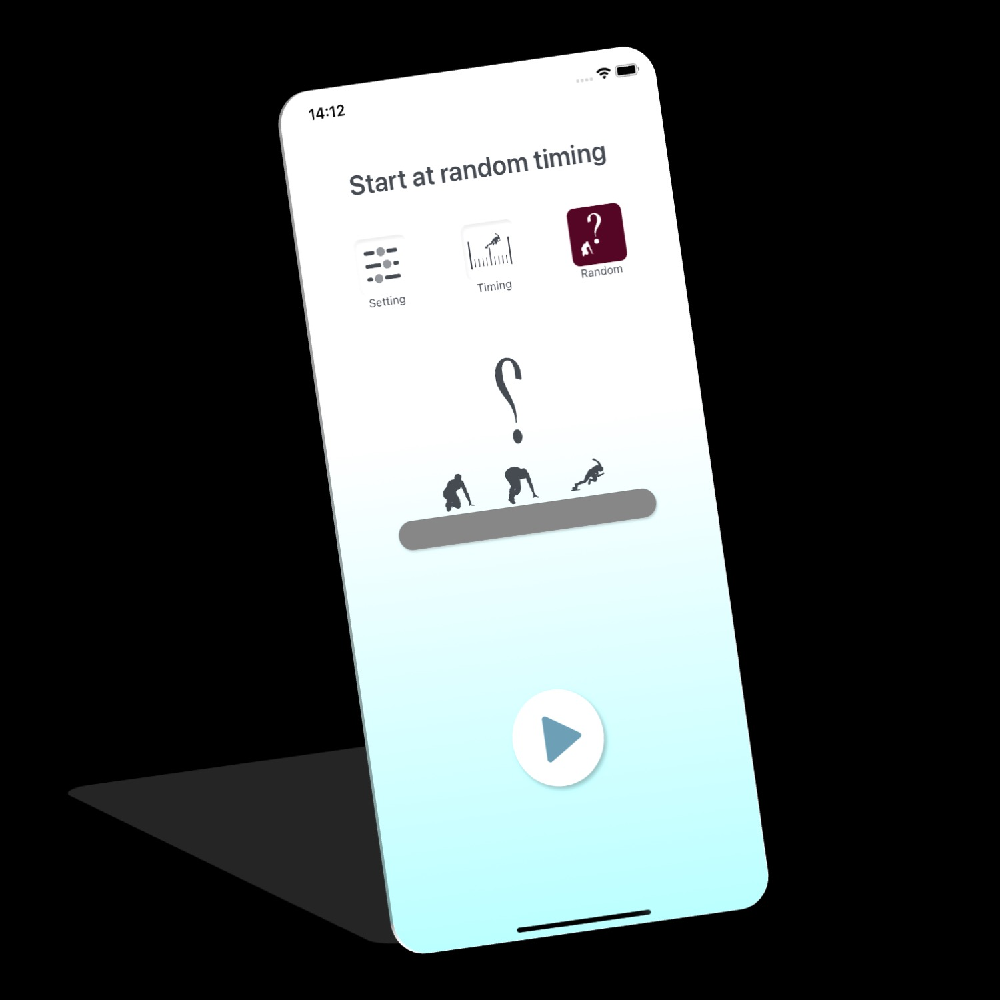
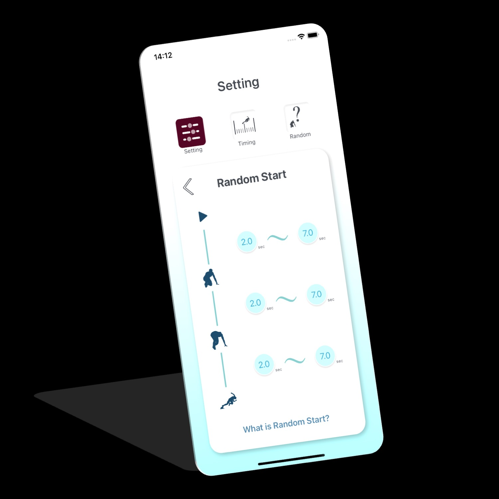
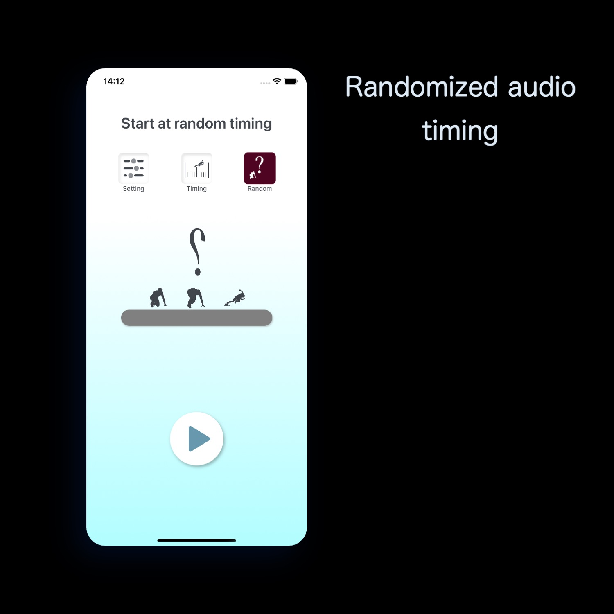

Custom start sequence
Set the intervals between “On Your Marks,” “Set,” and the pistol sound to match your practice goal.
Sprint start practice for athletes and coaches
Play “On Your Marks,” “Set,” and a pistol sound from your iPhone. Set exact cue intervals or randomize them for less predictable, race-like practice—whether you train alone, with a team, or as a coach.
21,000+ downloadsas of September 20, 2026
Download on the App Store
CORE FEATURES
Set the intervals between “On Your Marks,” “Set,” and the pistol sound to match your practice goal.
Randomize cue intervals so the pistol timing is harder to predict and the reaction practice feels more realistic.
Measure the reaction at the start and use the result to review progress across training sessions.
Record the start movement, then check body position, form, and the response to the sound.
APP SCREENS




QUICK ANSWERS
Starter Kit is an iPhone app for sprint start practice and reaction-time training. Individual athletes, teams, and coaches can use it.
Yes. Set the intervals between “On Your Marks,” “Set,” and the pistol sound, or randomize those intervals for less predictable practice.
Yes. The app can measure the reaction at the start so you can use the result when reviewing a training session.
Yes. Record the start movement and review your form and reaction afterward.
DEVELOPER
Independent iOS developer, medical doctor, and runner. Starter Kit was created so sprinters can practice starts without large or specialized equipment.